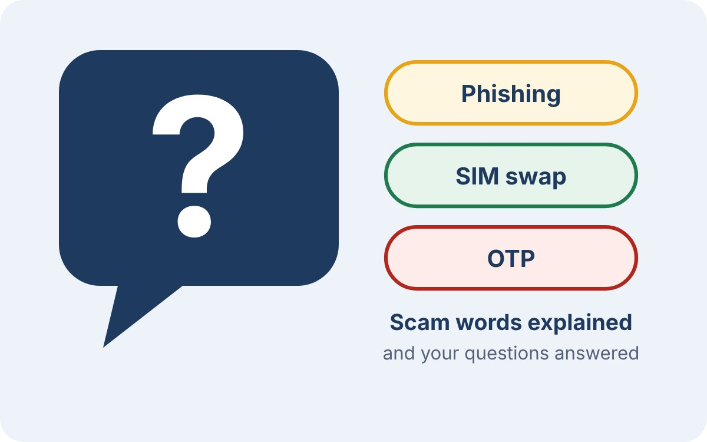

Learn more
Plain-language terms, answers to common questions, and where our information comes from.
Glossary and FAQ
Scam words explained and answers to common questions.

Glossary
- Scam
- A trick to get your money or details by lying to you.
- Advance-fee scam
- You are asked to pay a fee first to receive a prize, job or loan that never comes.
- Phishing
- Fake messages or sites that try to steal your PIN, passwords or details.
- Smishing
- Phishing by SMS.
- Vishing
- Phishing by phone call.
- Social engineering
- Tricking people into giving information instead of hacking a system.
- Impersonation
- Pretending to be someone else, such as an official, a company or a friend.
- PIN
- The secret number that approves your mobile money transactions.
- OTP (one-time password)
- A code sent to your phone that works once. Never share it.
- SIM swap
- A fraudster gets a replacement SIM for your number to take over your calls and codes.
- Mobile money agent
- A person or shop that handles cash in and cash out for mobile money users.
- Transaction ID
- The reference number on a mobile money confirmation message.
- Ponzi or pyramid scheme
- An investment that pays old members from new members’ money until it collapses.
- Regulator
- A government body that licenses and supervises an industry, such as UMRA for money lenders.
- UCC
- Uganda Communications Commission, which regulates telecom services.
Frequently asked questions
Can I get my money back?
It is not guaranteed. Report quickly to your provider and the police, because fast reports give them the best chance to act.
Why do scammers ask for mobile money?
It is fast, and once money has moved it is hard to take back.
The caller knew my name. Does that make it real?
No. Names and numbers can be found or leaked. Check through an official channel.
A friend sent the message. Is it safe?
Not always, because accounts get hacked. Call your friend on their usual number to confirm.
Do real employers charge fees to hire me?
They should not charge you to be hired. Treat any upfront payment as a warning sign and check it independently.
How do I check a lender?
Ask for the licence and confirm it with UMRA, the regulator for money lenders.
I lent my ID to register a SIM. What now?
UCC says you carry legal risk if it is used for crime. Tell your provider so you can sort out the registration.
Should I play along to waste the scammer’s time?
It is safer to ignore and block. If you do test them, never send any money or share any codes.
I feel embarrassed. What should I do?
Report anyway. Many people are caught, and your report helps others.
How do I report a scam number?
Tell your provider and the police, and keep the number and messages as evidence.
About and sources
Why we built Sente Safe and where our facts come from.
Sente Safe is a coursework project for Internet Technology & Web Design at Victoria University Kampala, built by a group of 12 students in November 2026. We chose the topic because mobile money scams target people like us, and a clear guide can stop them. Every page was coded by hand by the group.
The team
| No. | Name | Section |
|---|---|---|
| 1 | Kawuma Abdulkarim | S1 Welcome |
| 2 | Kambugu Tobias | S2 The problem |
| 3 | Innocent Lubanga-Kene Arop | S3 Fake jobs and scholarships |
| 4 | Kaye Hussein | S4 Fake loans and investments |
| 5 | Cubaka Mugaruka Pascal | S5 Fake prizes and PIN scams |
| 6 | Sedu Geofrey | S6 SIM cards and National ID |
| 7 | Mbetsa Rachael Chombo | S7 Check before you pay |
| 8 | Nalubega Emilly | S8 Safe habits |
| 9 | MWani Noven Blair | S9 Been scammed? The first hour |
| 10 | Mukite Elizabeth | S10 Where to report |
| 11 | Matovu Adrian J | S11 Glossary and FAQ |
| 12 | Nabulya Prossy | S12 About and sources |
Sources
- Uganda Communications Commission (2026). Three-year sentence for SIM card fraud in landmark UCC prosecution, 13 February. www.ucc.co.ug
- Atingi-Ego, M. (2026). Keynote at the Inaugural National Cybersecurity Conference, Kampala, 11 August. Text published by the Bank for International Settlements. www.bis.org
- Publicist East Africa (2025). Bank of Uganda Governor Atingi-Ego addresses mobile money thefts, 14 August. publicisteastafrica.com
- BusinessTimes Ug (2025). BoU urges Ugandans to report mobile money fraud through proper channels, 18 August. businesstimesug.com
- Pulse Uganda (2024). Government names illegal online loan apps to avoid, 27 August, reporting a notice from UMRA. www.pulse.ug
- Capital Markets Authority Uganda (2025). CMA advances crackdown on investment scams, 4 July. cmauganda.co.ug
- Kawuma Abdulkarim, group member (2026). Personal account of a prize scam call received in July 2024, told to the group in November 2026.
Image credits
Every picture on this site is the group’s own, or openly licensed and credited here. The logo was drawn for this project.
Disclaimer
This site is for awareness only. It is not legal or financial advice. Contact details were checked on 3 November 2026 and may change. Always confirm them on the official website.